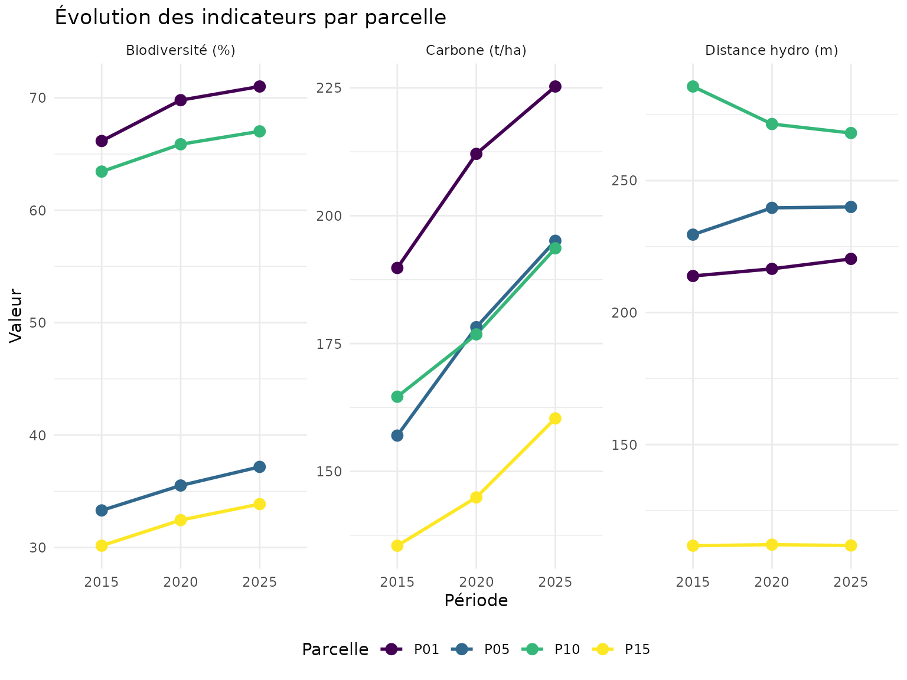
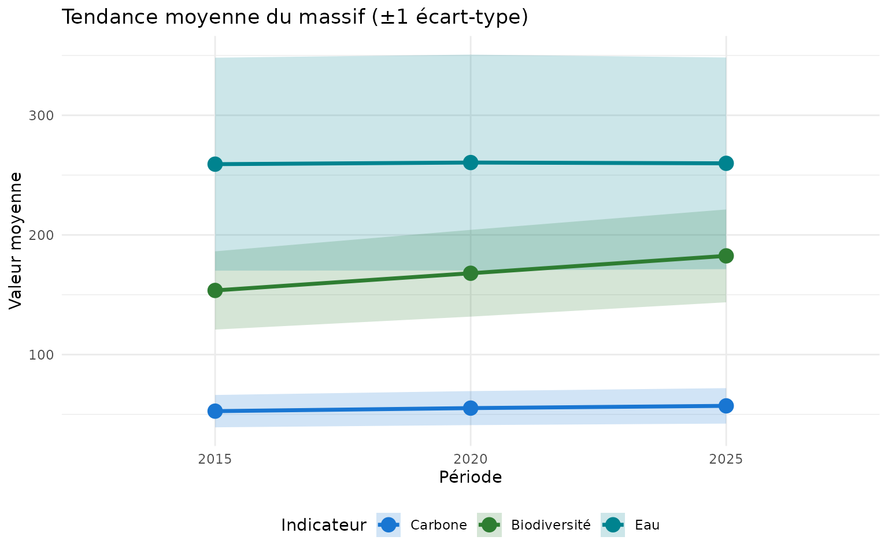
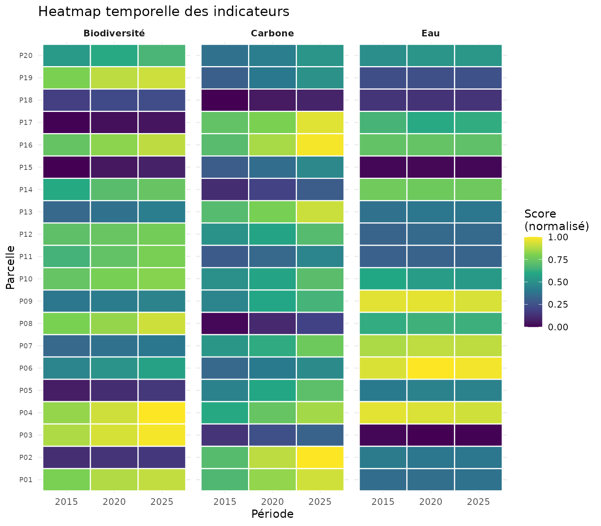
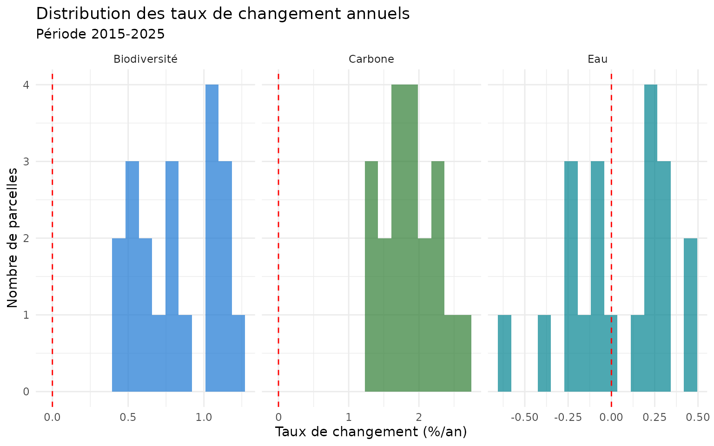
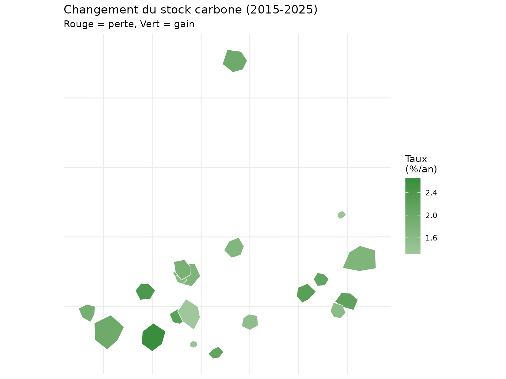
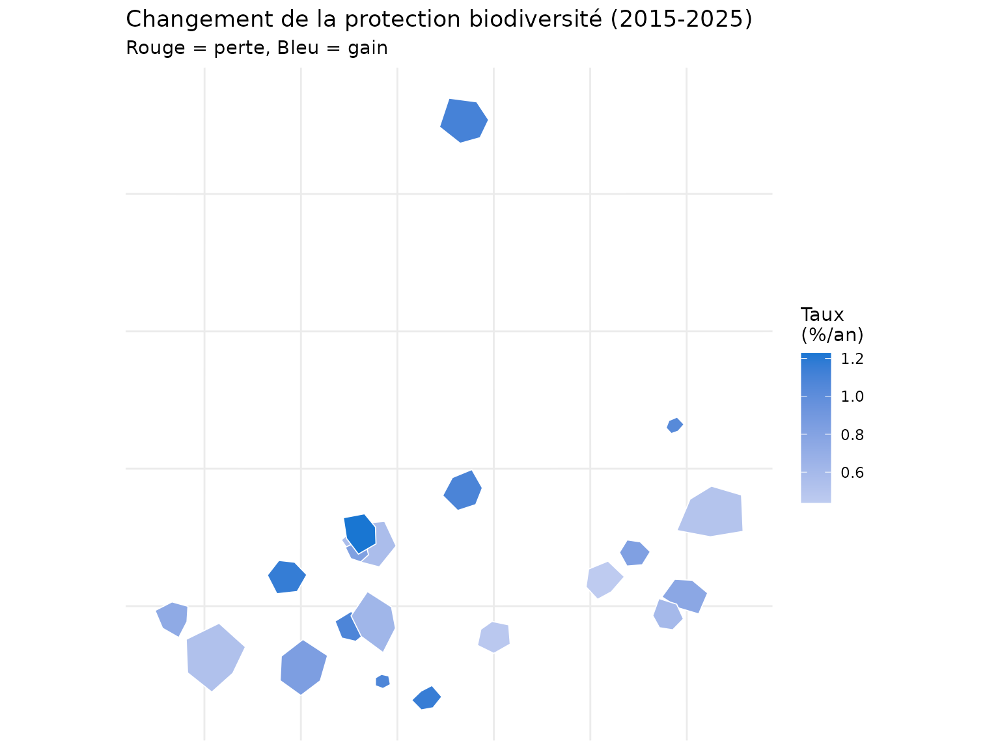
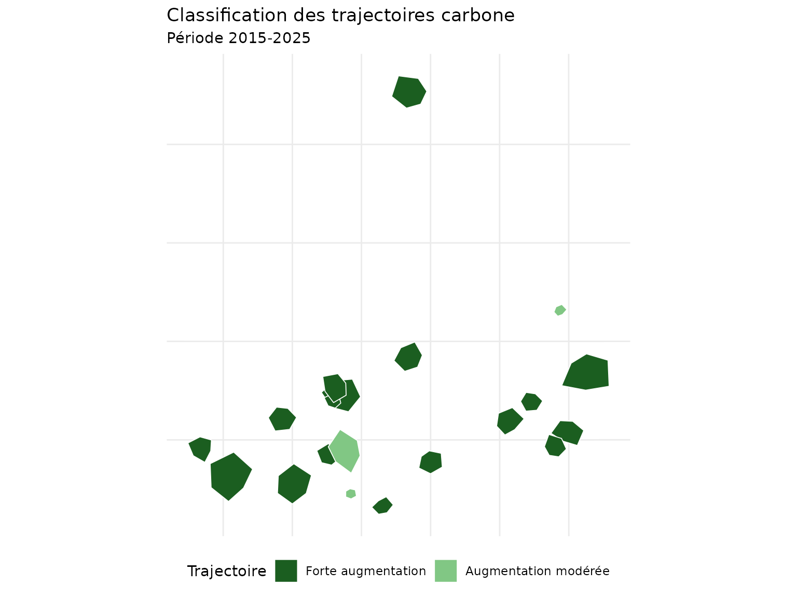
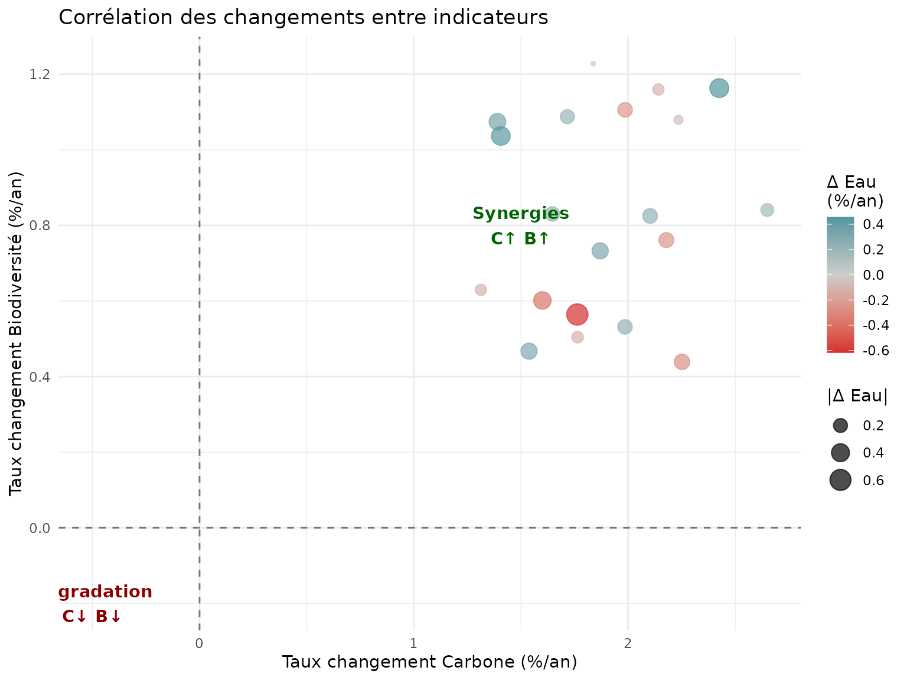

Analyse temporelle - Suivi multi-périodes
Pascal Obstétar
2026-06-11
Source:vignettes/temporal-analysis_fr.Rmd
temporal-analysis_fr.RmdIntroduction
L’analyse temporelle permet de suivre l’évolution des services
écosystémiques forestiers sur plusieurs périodes. Cette vignette
démontre comment utiliser le système nemeton_temporal()
pour : - Comparer les indicateurs à différentes dates - Calculer les
taux de changement - Visualiser les tendances temporelles - Détecter les
ruptures et transitions
Données de démonstration
Pour cette vignette, nous créons des données temporelles synthétiques sur 3 périodes.
# Charger les données de base
data(massif_demo_units)
# Créer des données pour 3 périodes avec évolution simulée
set.seed(42)
n <- nrow(massif_demo_units)
# Période 2015 - valeurs de base
units_2015 <- massif_demo_units
units_2015$period <- "2015"
units_2015$C1 <- runif(n, 80, 200) # Carbone biomasse
units_2015$B1 <- runif(n, 30, 70) # Protection biodiversité
units_2015$W1 <- runif(n, 100, 400) # Distance réseau hydro
# Période 2020 - évolution (+10% carbone, +5% biodiv)
units_2020 <- massif_demo_units
units_2020$period <- "2020"
units_2020$C1 <- units_2015$C1 * runif(n, 1.05, 1.15)
units_2020$B1 <- units_2015$B1 * runif(n, 1.02, 1.08)
units_2020$W1 <- units_2015$W1 * runif(n, 0.95, 1.05)
# Période 2025 - évolution continue
units_2025 <- massif_demo_units
units_2025$period <- "2025"
units_2025$C1 <- units_2020$C1 * runif(n, 1.03, 1.12)
units_2025$B1 <- units_2020$B1 * runif(n, 1.01, 1.06)
units_2025$W1 <- units_2020$W1 * runif(n, 0.98, 1.02)
# Combiner en un seul dataset
temporal_data <- rbind(units_2015, units_2020, units_2025)
temporal_data$period <- factor(temporal_data$period, levels = c("2015", "2020", "2025"))Visualisation des tendances
Graphique de tendance par parcelle
# Sélectionner quelques parcelles pour visualisation
parcels_select <- c("P01", "P05", "P10", "P15")
temporal_subset <- temporal_data |>
st_drop_geometry() |>
filter(parcel_id %in% parcels_select) |>
tidyr::pivot_longer(
cols = c(C1, B1, W1),
names_to = "indicator",
values_to = "value"
)
# Graphique de tendance
ggplot(temporal_subset, aes(x = period, y = value, color = parcel_id, group = parcel_id)) +
geom_line(linewidth = 1) +
geom_point(size = 3) +
facet_wrap(~indicator, scales = "free_y", labeller = labeller(
indicator = c(C1 = "Carbone (t/ha)", B1 = "Biodiversité (%)", W1 = "Distance hydro (m)")
)) +
scale_color_viridis_d() +
labs(
title = "Évolution des indicateurs par parcelle",
x = "Période",
y = "Valeur",
color = "Parcelle"
) +
theme_minimal() +
theme(legend.position = "bottom")
Tendance moyenne du massif
# Calculer les moyennes par période
temporal_summary <- temporal_data |>
st_drop_geometry() |>
group_by(period) |>
summarise(
C1_mean = mean(C1, na.rm = TRUE),
C1_sd = sd(C1, na.rm = TRUE),
B1_mean = mean(B1, na.rm = TRUE),
B1_sd = sd(B1, na.rm = TRUE),
W1_mean = mean(W1, na.rm = TRUE),
W1_sd = sd(W1, na.rm = TRUE),
.groups = "drop"
)
temporal_summary_long <- temporal_summary |>
tidyr::pivot_longer(
cols = -period,
names_to = c("indicator", "stat"),
names_sep = "_",
values_to = "value"
) |>
tidyr::pivot_wider(names_from = stat, values_from = value)
ggplot(temporal_summary_long, aes(x = period, y = mean, group = indicator, color = indicator)) +
geom_ribbon(aes(ymin = mean - sd, ymax = mean + sd, fill = indicator), alpha = 0.2, color = NA) +
geom_line(linewidth = 1.2) +
geom_point(size = 4) +
scale_color_manual(values = c(C1 = "#2E7D32", B1 = "#1976D2", W1 = "#00838F"),
labels = c("Carbone", "Biodiversité", "Eau")) +
scale_fill_manual(values = c(C1 = "#2E7D32", B1 = "#1976D2", W1 = "#00838F"),
labels = c("Carbone", "Biodiversité", "Eau")) +
labs(
title = "Tendance moyenne du massif (±1 écart-type)",
x = "Période",
y = "Valeur moyenne",
color = "Indicateur",
fill = "Indicateur"
) +
theme_minimal() +
theme(legend.position = "bottom")
Heatmap temporelle
# Préparer les données pour heatmap
heatmap_data <- temporal_data |>
st_drop_geometry() |>
select(parcel_id, period, C1, B1, W1) |>
tidyr::pivot_longer(cols = c(C1, B1, W1), names_to = "indicator", values_to = "value") |>
group_by(indicator) |>
mutate(value_scaled = (value - min(value)) / (max(value) - min(value))) |>
ungroup()
ggplot(heatmap_data, aes(x = period, y = parcel_id, fill = value_scaled)) +
geom_tile(color = "white", linewidth = 0.5) +
facet_wrap(~indicator, labeller = labeller(
indicator = c(C1 = "Carbone", B1 = "Biodiversité", W1 = "Eau")
)) +
scale_fill_viridis_c(name = "Score\n(normalisé)", option = "D") +
labs(
title = "Heatmap temporelle des indicateurs",
x = "Période",
y = "Parcelle"
) +
theme_minimal() +
theme(
axis.text.y = element_text(size = 7),
strip.text = element_text(face = "bold")
)
Analyse des changements
Taux de changement 2015 → 2025
# Calculer les taux de changement
change_data <- temporal_data |>
st_drop_geometry() |>
select(parcel_id, period, C1, B1, W1) |>
tidyr::pivot_wider(names_from = period, values_from = c(C1, B1, W1)) |>
mutate(
C1_rate = ((C1_2025 - C1_2015) / C1_2015) / 10 * 100, # %/an sur 10 ans
B1_rate = ((B1_2025 - B1_2015) / B1_2015) / 10 * 100,
W1_rate = ((W1_2025 - W1_2015) / W1_2015) / 10 * 100
)
# Afficher les taux
change_data |>
select(parcel_id, C1_rate, B1_rate, W1_rate) |>
head(10)
#> # A tibble: 10 × 4
#> parcel_id C1_rate B1_rate W1_rate
#> <chr> <dbl> <dbl> <dbl>
#> 1 P01 1.87 0.733 0.302
#> 2 P02 2.25 0.439 -0.263
#> 3 P03 2.18 0.761 -0.244
#> 4 P04 1.99 1.11 -0.231
#> 5 P05 2.43 1.16 0.457
#> 6 P06 1.39 1.07 0.329
#> 7 P07 1.99 0.532 0.220
#> 8 P08 2.65 0.841 0.158
#> 9 P09 1.76 0.504 -0.118
#> 10 P10 1.76 0.564 -0.617Distribution des taux de changement
change_long <- change_data |>
select(parcel_id, C1_rate, B1_rate, W1_rate) |>
tidyr::pivot_longer(cols = -parcel_id, names_to = "indicator", values_to = "rate") |>
mutate(indicator = gsub("_rate", "", indicator))
ggplot(change_long, aes(x = rate, fill = indicator)) +
geom_histogram(bins = 15, alpha = 0.7, position = "identity") +
geom_vline(xintercept = 0, linetype = "dashed", color = "red") +
facet_wrap(~indicator, scales = "free_x", labeller = labeller(
indicator = c(C1 = "Carbone", B1 = "Biodiversité", W1 = "Eau")
)) +
scale_fill_manual(values = c(C1 = "#2E7D32", B1 = "#1976D2", W1 = "#00838F")) +
labs(
title = "Distribution des taux de changement annuels",
subtitle = "Période 2015-2025",
x = "Taux de changement (%/an)",
y = "Nombre de parcelles"
) +
theme_minimal() +
theme(legend.position = "none")
Cartes de différence
Carte du changement de carbone
# Joindre les taux de changement aux géométries
change_sf <- massif_demo_units |>
left_join(change_data |> select(parcel_id, C1_rate, B1_rate, W1_rate), by = "parcel_id")
ggplot(change_sf) +
geom_sf(aes(fill = C1_rate), color = "white", linewidth = 0.3) +
scale_fill_gradient2(
low = "#D32F2F",
mid = "white",
high = "#388E3C",
midpoint = 0,
name = "Taux\n(%/an)"
) +
labs(
title = "Changement du stock carbone (2015-2025)",
subtitle = "Rouge = perte, Vert = gain"
) +
theme_minimal() +
theme(
axis.text = element_blank(),
axis.ticks = element_blank()
)
Carte du changement de biodiversité
ggplot(change_sf) +
geom_sf(aes(fill = B1_rate), color = "white", linewidth = 0.3) +
scale_fill_gradient2(
low = "#D32F2F",
mid = "white",
high = "#1976D2",
midpoint = 0,
name = "Taux\n(%/an)"
) +
labs(
title = "Changement de la protection biodiversité (2015-2025)",
subtitle = "Rouge = perte, Bleu = gain"
) +
theme_minimal() +
theme(
axis.text = element_blank(),
axis.ticks = element_blank()
)
Classification des trajectoires
# Classer les trajectoires de carbone
change_sf <- change_sf |>
mutate(
trajectory = case_when(
C1_rate > 1.5 ~ "Forte augmentation",
C1_rate > 0.5 ~ "Augmentation modérée",
abs(C1_rate) <= 0.5 ~ "Stable",
C1_rate > -1.5 ~ "Diminution modérée",
TRUE ~ "Forte diminution"
),
trajectory = factor(trajectory, levels = c(
"Forte augmentation", "Augmentation modérée", "Stable",
"Diminution modérée", "Forte diminution"
))
)
ggplot(change_sf) +
geom_sf(aes(fill = trajectory), color = "white", linewidth = 0.3) +
scale_fill_manual(
values = c(
"Forte augmentation" = "#1B5E20",
"Augmentation modérée" = "#81C784",
"Stable" = "#FFF9C4",
"Diminution modérée" = "#EF9A9A",
"Forte diminution" = "#C62828"
),
name = "Trajectoire"
) +
labs(
title = "Classification des trajectoires carbone",
subtitle = "Période 2015-2025"
) +
theme_minimal() +
theme(
axis.text = element_blank(),
axis.ticks = element_blank(),
legend.position = "bottom"
)
Statistiques par trajectoire
# Tableau récapitulatif
trajectory_stats <- change_sf |>
st_drop_geometry() |>
group_by(trajectory) |>
summarise(
n_parcelles = n(),
C1_rate_mean = round(mean(C1_rate), 2),
surface_ha = round(sum(surface_ha), 1),
.groups = "drop"
) |>
arrange(desc(C1_rate_mean))
trajectory_stats
#> # A tibble: 2 × 4
#> trajectory n_parcelles C1_rate_mean surface_ha
#> <fct> <int> <dbl> <dbl>
#> 1 Forte augmentation 17 1.98 123.
#> 2 Augmentation modérée 3 1.37 12.8Comparaison multi-indicateurs
# Scatter plot des taux de changement
ggplot(change_data, aes(x = C1_rate, y = B1_rate)) +
geom_hline(yintercept = 0, linetype = "dashed", alpha = 0.5) +
geom_vline(xintercept = 0, linetype = "dashed", alpha = 0.5) +
geom_point(aes(size = abs(W1_rate), color = W1_rate), alpha = 0.7) +
scale_color_gradient2(low = "#D32F2F", mid = "gray80", high = "#00838F", midpoint = 0) +
labs(
title = "Corrélation des changements entre indicateurs",
x = "Taux changement Carbone (%/an)",
y = "Taux changement Biodiversité (%/an)",
color = "Δ Eau\n(%/an)",
size = "|Δ Eau|"
) +
theme_minimal() +
annotate("text", x = 1.5, y = 0.8, label = "Synergies\nC↑ B↑", color = "darkgreen", fontface = "bold") +
annotate("text", x = -0.5, y = -0.2, label = "Dégradation\nC↓ B↓", color = "darkred", fontface = "bold")
Bonnes pratiques
Alignement spatial
- Assurer la correspondance spatiale entre périodes (même emprise, mêmes parcelles)
- Utiliser un identifiant unique (
unit_id) stable dans le temps - Vérifier les CRS (systèmes de coordonnées) identiques
Références
- Guide de démarrage :
vignette("getting-started_fr") - Familles d’indicateurs :
vignette("indicator-families_fr")
Session Info
sessionInfo()
#> R version 4.6.0 (2026-04-24)
#> Platform: x86_64-pc-linux-gnu
#> Running under: Ubuntu 24.04.4 LTS
#>
#> Matrix products: default
#> BLAS: /usr/lib/x86_64-linux-gnu/openblas-pthread/libblas.so.3
#> LAPACK: /usr/lib/x86_64-linux-gnu/openblas-pthread/libopenblasp-r0.3.26.so; LAPACK version 3.12.0
#>
#> locale:
#> [1] LC_CTYPE=C.UTF-8 LC_NUMERIC=C LC_TIME=C.UTF-8
#> [4] LC_COLLATE=C.UTF-8 LC_MONETARY=C.UTF-8 LC_MESSAGES=C.UTF-8
#> [7] LC_PAPER=C.UTF-8 LC_NAME=C LC_ADDRESS=C
#> [10] LC_TELEPHONE=C LC_MEASUREMENT=C.UTF-8 LC_IDENTIFICATION=C
#>
#> time zone: UTC
#> tzcode source: system (glibc)
#>
#> attached base packages:
#> [1] stats graphics grDevices utils datasets methods base
#>
#> other attached packages:
#> [1] sf_1.1-1 dplyr_1.2.1 ggplot2_4.0.3 nemeton_0.71.0
#>
#> loaded via a namespace (and not attached):
#> [1] utf8_1.2.6 sass_0.4.10 generics_0.1.4 tidyr_1.3.2
#> [5] class_7.3-23 KernSmooth_2.23-26 digest_0.6.39 magrittr_2.0.5
#> [9] evaluate_1.0.5 grid_4.6.0 RColorBrewer_1.1-3 fastmap_1.2.0
#> [13] jsonlite_2.0.0 e1071_1.7-17 DBI_1.3.0 purrr_1.2.2
#> [17] viridisLite_0.4.3 scales_1.4.0 codetools_0.2-20 textshaping_1.0.5
#> [21] jquerylib_0.1.4 cli_3.6.6 rlang_1.2.0 units_1.0-1
#> [25] withr_3.0.2 cachem_1.1.0 yaml_2.3.12 otel_0.2.0
#> [29] tools_4.6.0 vctrs_0.7.3 R6_2.6.1 proxy_0.4-29
#> [33] lifecycle_1.0.5 classInt_0.4-11 fs_2.1.0 htmlwidgets_1.6.4
#> [37] ragg_1.5.2 pkgconfig_2.0.3 desc_1.4.3 pkgdown_2.2.0
#> [41] terra_1.9-27 bslib_0.11.0 pillar_1.11.1 gtable_0.3.6
#> [45] glue_1.8.1 Rcpp_1.1.1-1.1 systemfonts_1.3.2 xfun_0.58
#> [49] tibble_3.3.1 tidyselect_1.2.1 knitr_1.51 farver_2.1.2
#> [53] htmltools_0.5.9 labeling_0.4.3 rmarkdown_2.31 compiler_4.6.0
#> [57] S7_0.2.2